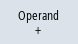

Änderungen von NC-/PLC-Variablen sind nur mit entsprechendem Kennwort möglich.

|
Warnung |
Fehlerhafte ParametrierungVeränderungen der Zustände von NC-/PLC-Variablen haben einen wesentlichen Einfluss auf die Maschine. Fehlerhafte Parametrierung kann Menschenleben gefährden und zur Zerstörung der Maschine führen. |
Im Fenster "NC/PLC-Variablen" tragen Sie in die Liste die NC-Systemvariablen und PLC-Variablen ein, die Sie beobachten oder ändern wollen:
-
Variable
Adresse für NC-/PLC-Variable
Fehlerhafte Variablen werden rot hinterlegt und in der Spalte Wert erscheint #.
-
Kommentar
Beliebiger Kommentar zur Variable.
Die Spalte kann ein- und ausgeblendet werden.
-
Format
Angabe des Formats, in dem die Variable angezeigt werden soll.
Das Format kann fest vorgegeben sein (z. B. Gleitpunkt)
-
Wert
Anzeige des aktuellen Wertes der NC-/PLC-Variablen
PLC-Variablen | |
|---|---|
Eingänge |
|
Ausgänge |
|
Merker | Merkerbit (Mx), Merkerbyte (MBx), Merkerwort (MWx), Merkerdoppelwort (MDx) symbolisch (MArea.<Variablenname>) |
Zeiten | Auf Zeiten kann nur mit der symbolischen Adresse zugegriffen werden |
Zähler | Auf Zähler kann nur mit der symbolischen Adresse zugegriffen werden |
Daten | Datenbaustein (DBx): Datenbit (DBXx), Datenbyte (DBBx), Datenwort (DBWx), Datendoppelwort (DBDx) |
Formate | |
|---|---|
B | Binär |
H | Hexadezimal |
D | Dezimal ohne Vorzeichen |
+/-D | Dezimal mit Vorzeichen |
F | Float/Gleitpunkt (bei Doppelworten) |
A | ASCII-Zeichen |
Beispiele für Schreibweisen
Zulässige Schreibweisen für Variablen:
PLC-Variablen:
Adressen: EB2, A1.2, DB2.DBW2
Namen: LBP_NC.E_NCKready, LBP_HMI.A_MCPChan IArea.VarEingang1, QArea.VarAusgang1
Hinweis Bei symbolischer Adressierung muss der Operand in Abhängigkeit von den enthaltenen Zeichen und Ziffern in Anführungszeichen (" ") gesetzt werden.
Weitere Informationen finden Sie im FAQ-Beitrag "."
NC-Variablen:
NC-Systemvariablen: Schreibweise $AA_IM[1]
Anwendervariablen/GUD: Schreibweise GUD/MyVariable[1,3]
BTSS - Schreibweise: /CHANNEL/PARAMETER/R[u1,2]
| Hinweis |
Wird vom PLC-Anwenderprogramm ein String in eine NC/PLC-Variable geschrieben, wird der String nur korrekt angezeigt, wenn die Variable NC-seitig als Feldvariable vom Typ "A" (ASCII) parametriert wird. |
Beispiel einer Feldvariablen
Variable | Format |
DBx.DBBy[<Anzahl>] | A |
LBP_ModeGroup.MG[2].A_MGReset | B |
Variable einfügen
Der Startwert beim "Filtern/Suchen" von Variablen ist unterschiedlich. Um zum Beispiel die Variable $R[0] einzufügen, geben Sie folgenden Startwert ein:
Der Startwert ist 0, wenn Sie nach "Systemvariablen" filtern.
Der Startwert ist 1, wenn Sie nach "Alle (kein Filter)" filtern. Dabei werden alle Signale angezeigt und in BTSS-Schreibweise dargestellt.
Die GUD aus den Maschinendaten werden im Suchfenster bei der Variablenauswahl nur dann angezeigt, wenn die zughörige Definitionsdatei aktiviert ist. Ansonsten ist die gesuchte Variable händisch einzugeben, z. B. GUD/SYG_RM[1]
Das folgende Maschinendatum steht stellvertretend für alle Variablentypen (INT, BOOL, AXIS, CHAR, STRING): MD18660 $MN_MM_NUM_SYNACT_GUD_REAL[1].
| Hinweis |
Anzeige von NC-/PLC-Variablen
Servo-Variablen Servo-Variablen können nur unter "Diagnose" → "Trace" ausgewählt und angezeigt werden. |
Werte ändern und löschen


Variablenliste bearbeiten
Mit den Softkeys "Zeile einfügen" und "Zeile löschen" haben Sie die Möglichkeit, die Variablenliste zu bearbeiten.
Operanden ändern
Mit den Softkeys "Operand +" und "Operand -" können Sie je nach Typ des Operanden die Adresse oder den Index der Adresse jeweils um 1 erhöhen bzw. erniedrigen.
| Hinweis |
Achsnamen als IndexDie Softkeys "Operand +" und "Operand -" wirken nicht bei Achsnamen als Index, z.B. bei $AA_IM[X1]. |
Beispiele | ||
|  | DB97.DBX2.5 Ergebnis: DB97.DBX2.6 $AA_IM[1] Ergebnis: $AA_IM[2] | |
MB201 Ergebnis: MB200 /Channel/Parameter/R[u1,3] Ergebnis: /Channel/Parameter/R[u1,2] |